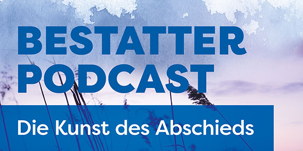

Allgäu Bestatter · Die Kunst des Abschieds.
In unserem Bestatterpodcast sprechen wir ehrlich und einfühlsam über die zentralen Themen rund um das Lebensende und den Beruf des Bestatters. In jeder Episode nehmen wir uns einem besonderen Aspekt an, um den Tod zu enttabuisieren und Menschen auf ihrer Reise zum Frieden zu begleiten. Wir klären auf, geben wertvolle Einblicke und teilen persönliche Erfahrungen. Viel Freude beim Zuhören!
Zehn Episoden. Ein offenes Wort.

Die Reise der Wiskott Blume
In unserer ersten Folge erfahrt ihr, wer hinter den Allgäu Bestattern steckt. Wir stellen uns vor, geben Einblick in unsere Arbeit · und verraten, was die geheimnisvolle „Wiskottblume" mit unserem Unternehmen zu tun hat.
Der Weg zum Bestatter
Wie wird man eigentlich Bestatter? Wir sprechen über den Weg in den Beruf und die Ausbildung, die dafür notwendig ist · was Azubis lernen, welche Fähigkeiten wichtig sind, und wie der Berufsalltag aussieht.
Die eigene letzte Reise gestalten
Warum ist es sinnvoll, sich rechtzeitig Gedanken über die eigene Beisetzung zu machen? Wann ist der richtige Zeitpunkt, was kann man im Voraus organisieren? Außerdem verrät Frau Ettmüller-Hummel, wie sie sich ihre eigene Beisetzung vorstellt.
Die Reise zum Frieden
Warum kommen Verstorbene in die Kühlung? Was geschieht mit dem Körper nach dem Tod? Wir gehen diesen Fragen auf den Grund, erklären, warum Bestatter oft im Team arbeiten · und was ein Thanatologe ist.
Bestattungsarten
Erdbestattung oder Feuerbestattung, Baumbestattung oder Seebestattung · jede Form hat ihre Besonderheiten. Wusstet ihr, dass man sich sogar mit einer Silvesterrakete „in die Luft jagen" lassen kann? Wir zeigen die Vielfalt moderner Bestattungsarten.
Feuerbestattung
Was hat die Feuerbestattung mit der Bibel zu tun? Warum entscheiden sich viele Menschen für diese Form der Beisetzung? Wir nehmen euch mit auf eine Reise ins Krematorium und erklären, was dort genau passiert.
Die neue Art einer Beerdigung
Wie haben sich Bestattungen im Laufe der Zeit entwickelt? Wir sprechen über moderne Entwicklungen in der Bestattungskultur, insbesondere im digitalen Zeitalter · und über neue Möglichkeiten, Abschiede zu gestalten.
Tradition und Individualität
Religiöse und nicht religiöse Bestattungen · wo liegen die Unterschiede? Wir beleuchten Vorurteile, Traditionen und die individuellen Gestaltungsmöglichkeiten in den verschiedenen Glaubensgemeinschaften.
Der Weg zum Jenseits · Leben nach dem Tod
Woran glaubt ein Bestatter? In dieser persönlichen Episode gibt Frau Ettmüller-Hummel Einblicke in ihre eigenen Überzeugungen · und wir philosophieren darüber, welche Vorstellungen es vom Jenseits gibt.
Sternenkinder und ihre Geschichten
Diese Folge widmen wir einem besonders einfühlsamen Thema: den Sternenkindern. Wie werden Sternenkinder und ihre Familien auf ihrem schweren Weg begleitet, wie schwer fällt dieses Thema auch den Bestattern selbst · und welche Möglichkeiten gibt es, Abschied zu nehmen.
Sprechen Sie uns an.
Wir freuen uns über jede Rückmeldung zu unserem Podcast.
08331 61078